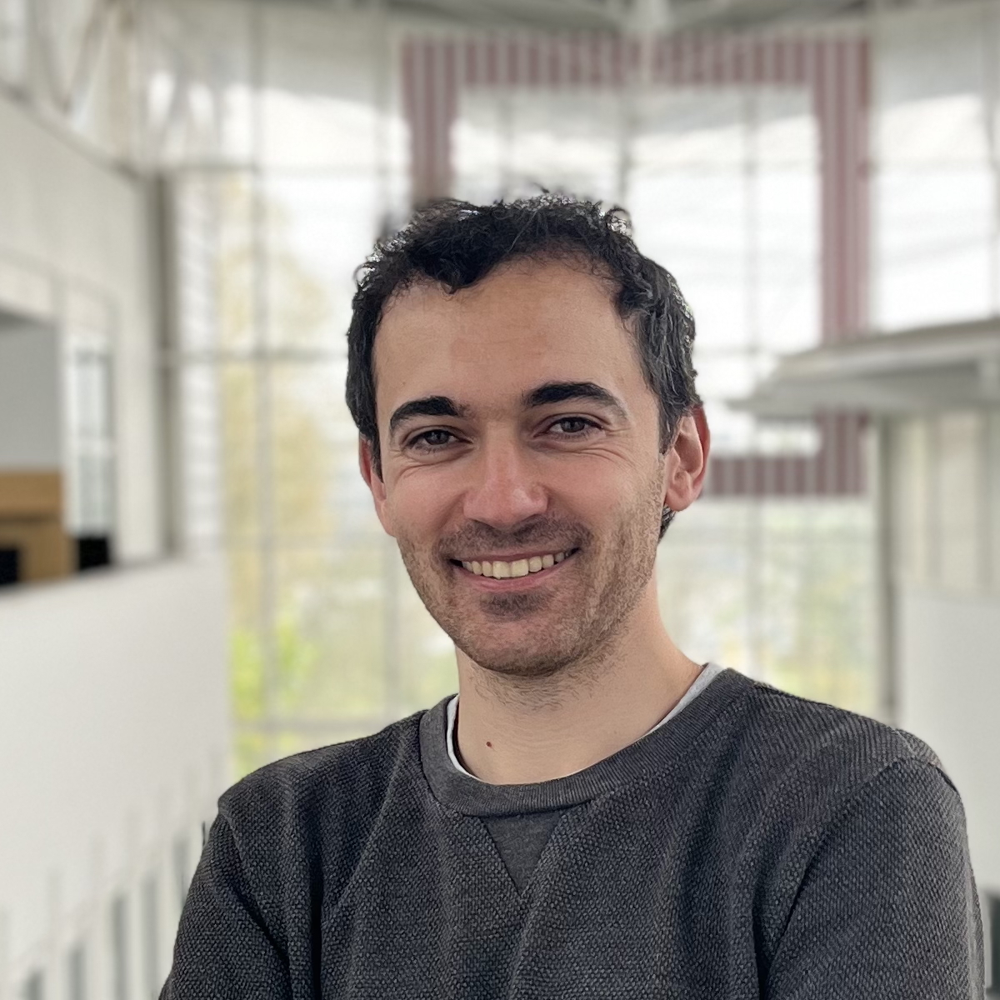

|
Artur Toshev
I'm a Founding Research Scientist at Zenithon AI, where I work across the machine learning stack, including representation learning, large-scale model training, and the data processing and curation pipelines supporting them. My current work focuses on developing foundation models for plasma physics.
I'm also a final-year PhD candidate at Technical University of Munich, supervised by Professor Nikolaus Adams. My PhD research focuses on accelerating particle-based fluid dynamics with machine learning. In 2025, I completed research internships with the Meta FAIR Chemistry team in San Francisco and at the CAI-2 Division at Los Alamos National Laboratory.
A non-exhaustive list of what currently excites me includes: large-scale machine learning for scientific applications, representation learning for physical systems, geometric deep learning, latent-space generative modeling, turbulence and plasma physics. If any of these topics resonate with you, feel free to reach out.
If you want to chat, just drop me an email or connect with me on one of the following platforms:
X /
Google Scholar /
Github /
LinkedIn
|

|
|
Publications
Enhancing Diffusion-Based Sampling with Molecular Collective Variables
J. Nam, B. Máté, A. P. Toshev, M. Kaniselvan, R. Gómez-Bombarelli, R. T. Q. Chen, B. Wood, G.-H. Liu, B. K. Miller
ICLR 2026
⇾ ICLR'26 / arXiv / code
LaM-SLidE: Latent Space Modeling of Spatial Dynamical Systems via Linked Entities
F. Sestak, A. P. Toshev, A. Fürst, G. Klambauer, A. Mayr, J. Brandstetter
NeurIPS 2025
⇾ project page / tweets 1 and 2 / arXiv / code
Retro-Rank-In: A Ranking-Based Approach for Inorganic Materials Synthesis Planning
T. Prein, E. Pan, S. Haddouti, M. Lorenz, J. Jehkul, T. Wilk, C. Moran, M. P. Fotiadis, A. P. Toshev, E. Olivetti, J. L.M. Rupp
AI4Materials workshop at ICLR 2025
⇾ AI4Mat@ICLR'25 / poster
On Learning Quasi-Lagrangian Turbulence
A. P. Toshev, T. Kalinov, N. Gao, S. Günnemann, N. A. Adams
MLMP workshop at ICLR 2025
⇾ MLMP@ICLR'25 / poster
UPT++: Latent Point Set Neural Operators for Modeling System State Transitions
A. Fürst*, F. Sestak*, A. P. Toshev*, B. Alkin, N. A. Adams, A. Mayr, G. Klambauer, J. Brandstetter
MLMP workshop at ICLR 2025
⇾ MLMP@ICLR'25 / poster
Neural SPH: Improved Neural Modeling of Lagrangian Fluid Dynamics
A. P. Toshev, J. A. Erbesdobler, N. A. Adams, J. Brandstetter
ICML 2024
⇾ project page / tweet / ICML'24 / arXiv / poster / code
JAX-SPH: A Differentiable Smoothed Particle Hydrodynamics Framework
A. P. Toshev, H. Ramachandran, J. A. Erbesdobler, G. Galletti, J. Brandstetter, N. A. Adams
AI4DiffEq workshop at ICLR 2024
⇾ tweet / AI4DiffEq@ICLR'24 / arXiv / poster / code
LagrangeBench: A Lagrangian Fluid Mechanics Benchmarking Suite
A. P. Toshev* , G. Galletti* , F. Fritz, S. Adami, N. A. Adams
NeurIPS 2023 Track on Datasets and Benchmarks
⇾ NeurIPS'23 / arXiv / poster / video / code
Accelerating Molecular Graph Neural Networks via Knowledge Distillation
F. E. Kelvinius* , D. Georgiev* , A. P. Toshev* , J. Gasteiger
NeurIPS 2023 / LOG 2023 (oral)
⇾ NeurIPS'23 / arXiv / poster / video @ LOG'23
Learning Lagrangian Fluid Mechanics with E(3)-Equivariant Graph Neural Networks
A. P. Toshev, G. Galletti, J. Brandstetter, S. Adami, N. A. Adams
Geometric Science of Information (GSI) 2023
⇾ tweet / arXiv / poster / slides / code
E(3) Equivariant Graph Neural Networks for Particle-Based Fluid Mechanics
A. P. Toshev, G. Galletti, J. Brandstetter, S. Adami, N. A. Adams
Physics4ML workshop at ICLR 2023
⇾ workshop version of the GSI paper above.
On the Relationships between Graph Neural Networks for the Simulation of Physical Systems and Classical Numerical Methods
A. P. Toshev, L. Paehler, A. Panizza, N. A. Adams
AI4Science workshop at ICML 2022
⇾ arXiv / poster / slides
|
|
Experience
Zenithon AI, Founding Research Scientist
2026 – present
⇾ Foundation models for plasma physics, spanning representation learning, large-scale model training, and supporting data processing and curation pipelines.
Los Alamos National Laboratory, Graduate Research Intern, CNLS / CAI-2
2025
⇾ Data-driven reduced-order modeling and machine-learned turbulence models for fluid dynamics.
Meta FAIR Chemistry, Research Intern
2025
⇾ Reinforcement-learning methods for atomistic generative models and large-scale asynchronous training.
Johannes Kepler University Linz, Visiting Researcher
2024
⇾ Latent-space modeling for large-scale physical systems and molecular conformer sampling.
Technical University of Munich, PhD Researcher
2021 – present
⇾ Machine learning for particle-based fluid dynamics, differentiable simulation, and geometric deep learning.
|
|
Education
Technical University of Munich
PhD candidate in Mechanical Engineering, 2021 – present
⇾ Data-Driven Acceleration of Particle-Based Fluid Simulations, advised by Nikolaus A. Adams
Technical University of Munich
MSc Materials Science and Engineering, 2018 – 2021
⇾ Focus on uncertainty quantification and mathematical modeling
KAIST, Republic of Korea
Exchange studies in physics, 2019
⇾ Statistical physics, materials kinetics, and sintering
Technical University of Munich
BSc Engineering Science, 2016 – 2019
|
|
Teaching
It was a pleasure to be a teaching assistant for the following courses at TUM.
-
Seminar AI for Science
Summer '23, '24
⇾ New Master's level course
-
Introduction to Scientific Machine Learning for Engineers (lecture/exercise)
Winter '22/23, '23/24, '24/25
⇾ Check out our SciML Jupyter Book, which I co-developed and maintained
-
Turbulent flows (exercise)
Summer '22
-
Turbulent flow simulation on HPC systems (practical course)
Winter '21/22
In addition, I was supervising students as a tutor during my Master's studies.
- Summer 20 - Engineering Mechanics 2 (MSE)
|
|
Selected Projects
LagrangeBench
⇾ Benchmarking suite for machine learning on particle-based fluid simulations.
JAX-SPH
⇾ Differentiable smoothed particle hydrodynamics framework implemented in JAX.
SciML Jupyter Book
⇾ Lecture notes and coding exercises for Scientific Machine Learning at TUM.
|
|
Additional
Research: geometric deep learning, differentiable physics, generative modeling, uncertainty quantification, molecular and fluid simulation
Tools: JAX, PyTorch, Python, Ray, Slurm, Docker, Git
Academic service: reviewer for NeurIPS, ICML, ICLR, and JCP; ICLR 2026 Area Chair (Blog Post Track); NeurIPS top reviewer 2024
|
|
{kind=link}
{kind=link}
{kind=link}
{kind=link}